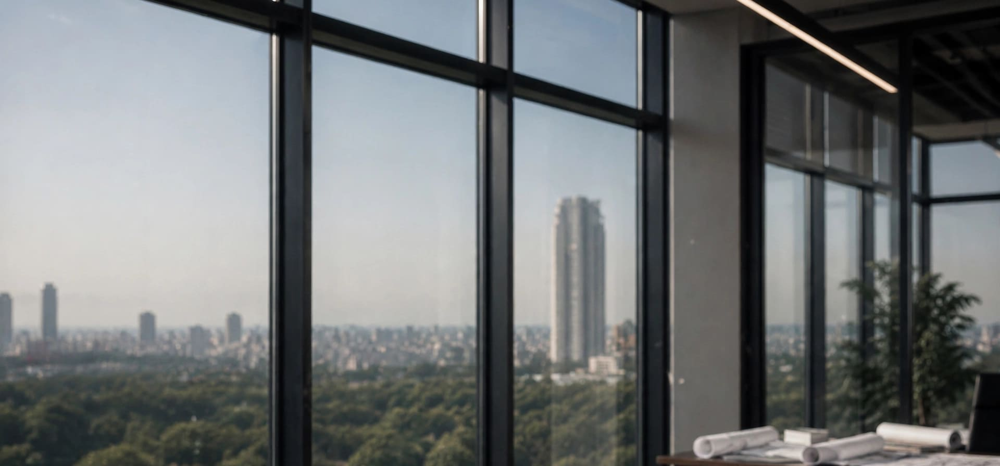

Concepto
Interiorismo de Autor
Mobiliario de diseno que combina funcionalidad con estetica. La madera natural crea calidez en un entorno corporativo moderno.
Iluminacion integrada que acompana el ritmo de trabajo. Cada detalle esta pensado para la productividad y el bienestar del ocupante.
Un espacio que refleja la personalidad de quien lo habita. La oficina como extension del estilo de vida.
